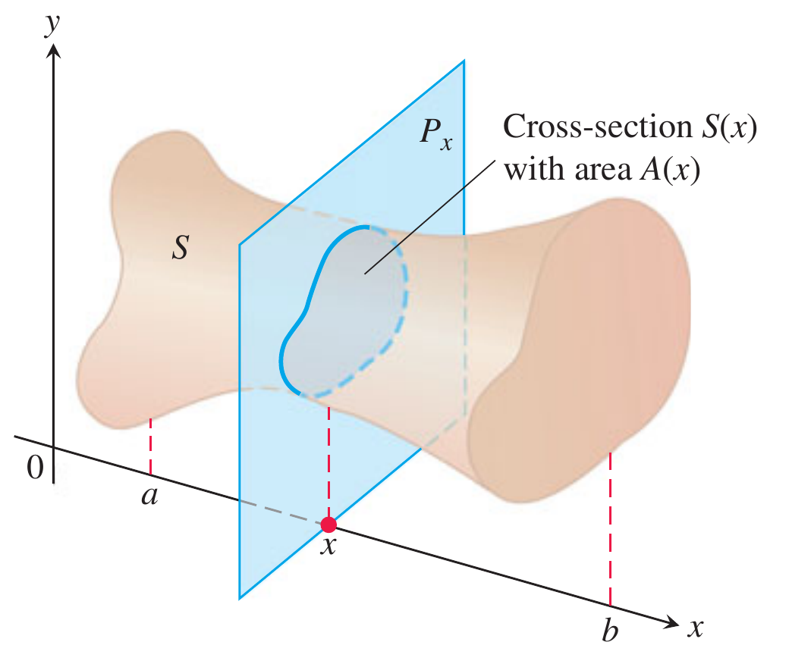
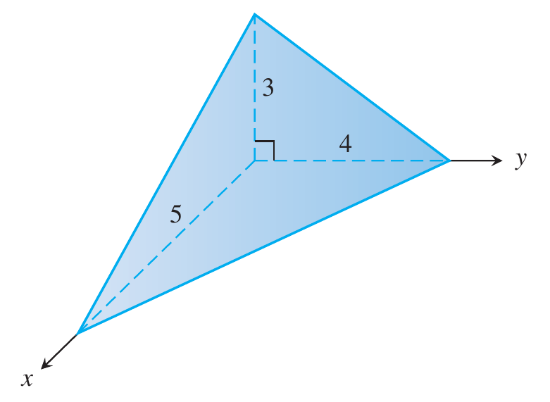
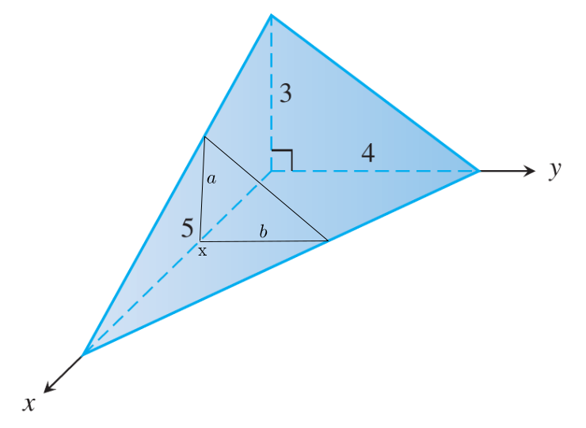
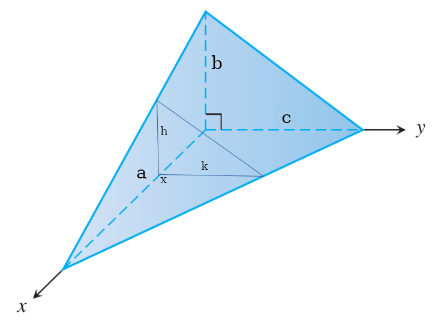

Volumes by Slicing#
Discussion & Definitions#
Just like the area between two curves, this is a good introductory exercise in going through the process of representing a quantity as the limit of a Riemann sum and hence establishing that it is a definite integral. This is a good exercise to do since many quantities in the physical sciences and economics (among others) can be represented this way, but we will leave the details to the textbook you are using.
Theorem: Finding the Volume of an Object by Cross Sections
If \(A(x)\) represents the cross sectional area of an object that extends from \(x = a\) to \(x = b\) then the volume of the object is given by
The above theorem is called the slicing method.
Problem Solving: Finding Volumes by the Slicing Method
Examine the solid, put an x-axis along the object so that the cross sections perpendicular to the axis form a familiar shape, circle, rectangle, triangle, etc.
Determine a formula for the area of the cross-section at any point x on the axis, \(A(x)\).
Integrate the area formula over the appropriate interval to get the volume.

Cross-Section Visualization#
Example: Volume of a Right Tetrahedron#
Find the volume of the given right tetrahedron.

Example Visualization#
First we will take a cross section perpendicular to the x-axis at a point x. The cross section is a right triangle with base length b and height a.

Example Visualization#
The area of the cross section triangle is,
We can find a and b in terms of x by using similar triangles. Looking at the triangle containing a we have,
so
Doing the same with the triangle containing b we have,
so
and hence,
The interval we need to integrate over is \([0, 5]\), hence the volume is,
GeoGebra#
The majority of these types of exercises are done by hand but the CAS can com in handy if there are difficult integrals to take at the end or if there are complex simplifications that need to be done. In this exercise there is really neither but we will do the last integral.
Input the function,
6 (x - 5)^2/25
Select a new cell and input Integral(f, 0, 5). The result will be 10.
CLAE#
The majority of these types of exercises are done by hand but the CAS can com in handy if there are difficult integrals to take at the end or if there are complex simplifications that need to be done. In this exercise there is really neither but we will do the last integral.
Input the function,
6*(x - 5)^2/25
Select Calculus > Definite Integral, using the 0 and 5 bounds. The result will be 10.
Maxima#
The majority of these types of exercises are done by hand but the CAS can com in handy if there are difficult integrals to take at the end or if there are complex simplifications that need to be done. In this exercise there is really neither but we will do the last integral.
Input the function,
kill(all);
f(x):=6*(x - 5)^2/25
then integrate with,
integrate(f(x),x,0,5)
The result will be 10.
Example: Volume of a General Right Tetrahedron#
Find the volume of the given general right tetrahedron. This is just an extension of the example above and is done in the same manner.
Example Visualization#
First we will take a cross section perpendicular to the x-axis at a point x. The cross section is a right triangle with base length k and height h.

Example Visualization#
The area of the cross section triangle is,
We can find h and k in terms of x by using similar triangles. Looking at the triangle containing h we have,
so
Doing the same with the triangle containing k we have,
so
and hence,
The interval we need to integrate over is \([0, a]\), hence the volume is,
CLAE#
Again this is an easy integral but we will use the CAS just for practice.
Input the function,
b*c*(a - x)^2/(2*a^2)
Then select Calculus > Definite Integral, variable x, lower bound 0 and upper bound a. The result is
Maxima#
Again this is an easy integral but we will use the CAS just for practice.
Input the function,
kill(all);
f(x):=b*c*(a - x)^2/(2*a^2)
Then integrate with,
integrate(f(x), x, 0, a)
The result is